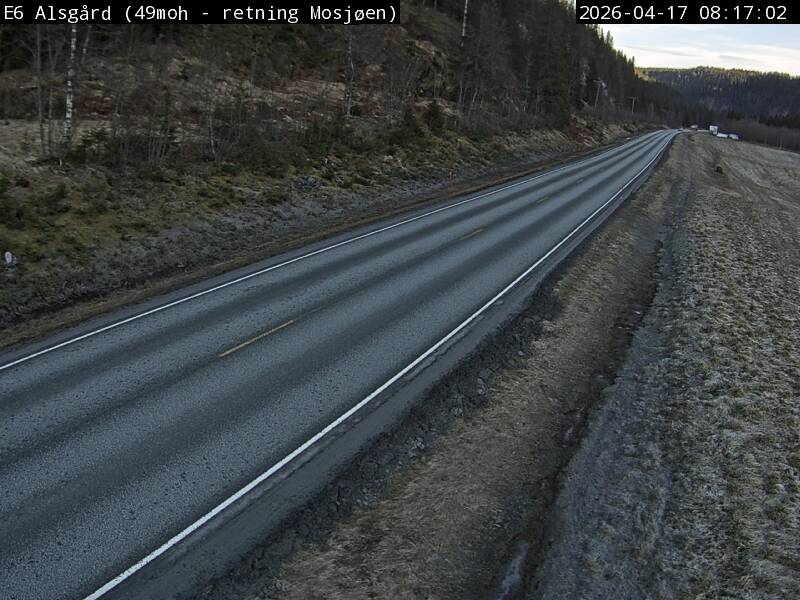

Version 0.1 · Captured April 17, 2026 · MIT licensed
skywatch is a small weather prototype. It pulls a 7-day forecast from Open-Meteo, resolves your city from the server-side IP without ever calling the browser Geolocation API, and can optionally run a computer-vision check against public webcams. The screenshots below are straight captures from the running app; no mockups.
Screenshots
Figure 1. Hero view, Dhaka. Live Open-Meteo reading at 31°C, feels like 39°C. Only one provider is active in v0.1, so the ensemble bar sits at 100%.Figure 2. Full dashboard, Dhaka. 7-day Recharts chart, daily cards, and the cameras section.Figure 3. Tokyo. Same session, different city, via the cascading picker. ECMWF IFS had 19°C, 41% humidity, and rain on Thursday at 69% probability when this was captured.Figure 4. Ensemble panel close-up. Per-provider weights, fused temperature, daily cards.Figure 5. Cameras section. Wired up and waiting for a Windy API key. Drop a key into .env and the panel populates.
Camera proof
One of the ideas behind skywatch is to cross-check a forecast against what a public camera is actually showing. Three legally-sourced frames are shown below, each captured on April 17, 2026 and compared against the Open-Meteo forecast for the same coordinates at the same minute. These are separate checks from the Dhaka and Tokyo dashboard screenshots above; they exist to show the camera-vs-forecast pipeline works end to end.
Camera 1. E6 Alsgård, Nordland, Norway

Figure 6. Statens vegvesen camera at E6 Alsgård, 49 m elevation, direction Mosjøen. Timestamp burned into frame: 2026-04-17 08:17:02.
What the camera shows
Daylight, dry road, thin high cloud, coniferous forest, no precipitation
Open-Meteo at 65.83 N, 13.31 E
3.6 °C, feels like 1.1 °C, 29% cloud cover, 70% humidity, 1.4 km/h wind, WMO code 1 (mainly clear)
Match
Forecast and camera agree. Mostly clear with some high cloud, cool, dry, calm.
Figure 8. NOAA Great Lakes Environmental Research Laboratory, Harrison-Dever Crib station, 01:00 CDT.
What the camera shows
Night scene, near-black, no visible skyline, a single distant light
On-station readings
6.7 °C air, 6.8 °C dew point, 100% relative humidity, 0.0 kts wind from the east
Match
Dew point equal to air temperature at 100% humidity is the textbook fog signature. The featureless dark frame is what you would expect when the camera is sitting inside low cloud or fog at night.
Full capture metadata, including coordinates and raw forecast values, is in docs/cameras/readings.json. No authentication was used. The same URLs will return updated frames if you open them now.
Status
What is live today, what needs a key, and what is on the roadmap.
Feature
State
Open-Meteo / ECMWF IFS forecast
Live, no key
IP to city geolocation (ipapi.co)
Live
Cascading city picker
Live
Ensemble fusion engine
Live, 33 passing tests
7-day Recharts chart and daily cards
Live
HSV + Sobel heuristic classifier
Live
US DOT 511 camera integration
Live (public data)
OpenWeatherMap provider
Needs key
Windy webcam integration
Needs key
NVIDIA Earth-2 NIM
Stub, target v0.3
EfficientNet-B0 fine-tuned classifier
Pipeline ready, target v0.2
Google MetNet-3
Placeholder, no public API yet
LLM narration
Roadmap, v0.2
Reproduce locally
The screenshots above were captured on a fresh clone with no API keys set:
git clone https://github.com/ruddro-roy/skywatch
cd skywatch
docker-compose up
Then open http://localhost:3000. See DEMO.md for the non-Docker path.


{kind=link}